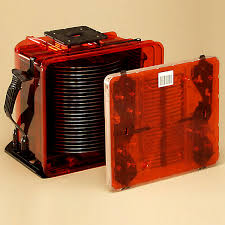

I tried to include as many links as possible to allow the reader to go down rabbit holes as they see fit.
I tried to keep info basic enough for the skimmers/laypeople to enjoy while still adding more technical details located at the end of each section in the collapsible element. As you'll see, there are a lot of "for example"s. As the great Paul Halmos once said, "a good stock of examples, as large as possible, is indispensable for a thorough understanding of any concept, and when I want to learn something new, I make it my first job to build one".
Interactive animations are denoted by the large "Click here to [X]!". While rudimentary, they get the job done. These were vibe coded using Claude 4 Opus with extended thinking and a few iterations.
This information is current as of August 2025.
Sections or sentences with an asterisk (*) are subjects I am less knowledgable about than in Fabs I. I only have firsthand experience in a few (older) fabs, but do have some secondhand experience through colleagues and friends working at more advanced fabs.
What Do Fabs Want? Chips! When Do They Want Them? Now!
And that isn't an exaggeration. Like most manufacturing operations, fabs want to pump out as many wafers as possible in as little time as possible for as little cost as possible with as few defects as possible. Sound familiar?
So many choose-two triangles exist in the world!
Fabs are often skirting around the impossible region depending on a variety of factors.
First and foremost, market conditions. If the market is desperate for chips, fabs are willing to spend more money to satisfy the customer demand. If a downturn is happening, the money belt gets tightened and fabs are more focused on going slow to make sure everything they output is of acceptable quality and can be sold for money.
Second, leadership. A fab's culture comes from the top. Is the fab leadership more risk averse to the point of wanting to slow things down to make sure the final product is high quality and cheap? Or are they willing to risk it for the biscuit (read: a fat bonus) and go into warp speed (read: turn off some quality checks) to get more chips out the door faster?
Combine these factors with the Eye of Sauron that is the company's top brass constantly scanning fab performance metrics (speed, cost, quality) and you get ever-changing priorities, especially if one metric was particularly poor, e.g., poor quality will lead to less risk taking at the cost of other metrics getting worse.
Scanning for fab leaders who made poor decisions or can be blamed for others' poor decisions
Onto the operations. A fab's operations consists of people and systems dedicated to producing as many wafers as possible in as little time as possible without botching the process flow. They (mostly) don't care about cost because that's an engineer's job. They only care about quality when it affects their metrics, otherwise it's the quality group's job.
Because I'm only familiar with one or two fab's operations styles, I'll pull what I can from the literature and the rest out of my as...repertoire of semiconductor knowledge. There may also be some "this would be super nice to have moments" in there.
Terminology, Also Known as Fabspeak
Defining key terms upfront is helpful for obvious reasons, so here they are in no particular order:
Cycle time: Time required to produce a part or complete a process. From Semi Engineering's Battling Fab Cycle Times:
Generally, the most common metric for cycle time in the fab is “days per mask layer.” On average, a fab takes 1 to 1.5 days to process a layer.
WIP: Work in progress, or the number of wafers currently in progress at X, where X can be a specific step, a group of steps, etc. "Loadings" is similar. For example, fab X's loadings/WIP may consist of product1 at 60% of total WIP, product2 at 30% of total WIP, and product3 at 10%. The start numbers (the next term) reflect these numbers.
Starts: The number of wafers that are started each day, or WPD. For example, a 500 WPD fab will add 500 WPD to its total WIP each day. Hopefully they are completing more than 500 WPD, otherwise WIP will start to build up quickly!
Product or technology: Each wafer is a unique product, also called technology. Product1 may be for your car's braking system and product2 may be for your GPU. These require different processing steps but may still share the same machine at some point in their life cycles. For example, all cars go through the paint step but not all paint steps apply to the same car.
Device: A subset of a technology. Device1, ..., deviceX may all be of type technologyX, but have slightly different functions. For example, if a Toyota Prius is the technology, then the Prius LE, Prius XLE, and so on are the specific devices. This is also like saying a specific manufacturer part number. Individual chips, also called die, on the wafer are all made up of the same device.
Lot: A set of 25 wafers that all follow the exact same steps (unless some are getting experimented on). These all have a specific number for tracking purposes.

A 25-wafer lot inside a FOUP
Qual: A test wafer (or wafers) that verify a tool is operating correctly. For example, a deposition tool qual's process flow may look something like:
Measure pre thickness (so we know how much thickness was added)
Measure pre particles (so we know what particles were already there)
Process step on tool with target conditions
Measure post particles (to see how many new particles there are)
Measure post thickness (to see if the target thickness was reached)
FOUP: An acronym for front opening unified pod, these are the carriers that lots travel around in from tool to tool.
Filling the Fab Full of FOUPs*
Planning groups work across a company's fabs to ensure the best loadings based on current demand, forecasted demand, and each fab's capabilities. Shift in the market? Adjust the numbers! Change in another factory's capabilities? Adjust the numbers! Wind direction change? Adjust the numbers!
Your local fab may or may not have one of these on top
Planning groups work with each fab's industrial engineers to make sure the numbers they're looking for can run, bringing us to...
Modeling a Fab's Throughput Capabilities
Before actually running any material, the fab must know how much it can run. You can't just say I'm going to start 1000 WPD without knowing if those numbers can actually be supported.
That's where the industrial engineers come in. Trained in the art—okaaaaay, science—of modeling, they're able to tell:
How quickly each product can make it through each machine, and thus the fab
Which tools each product uses
Those numbers can then be normalized to determine the possible product mixes that can run, i.e, how much of product1, ..., productN can be run at any given time without interfering (too much) with the other products. We want everything to move smoothly!
Starting Fresh Wafers
Now that the loadings are decided, the fab can actually start running wafers. Fresh lots are started and assigned both a lot number and device name.
They then go out into the fab, get processed according to their flow, and get shipped out for testing (that's outside the scope of this post).
"Mom, where do wafers come from?"
It's at this point that the MES takes over.
The Brains of the Fab: Manufacturing Execution System
As the heading implies, the manufacturing execution system (MES) is the brains of the fab, helping to coordinate, process, and keep track of every single lot that's currently active and its history. Everything you need to know—past steps, future steps, current steps, etc—is in one central location. It's from the MES that you can do many different things:
Set up new process flows for new devices entering the fab
An example MES (it's a joke because no fab will share an image of what their MES looks like)
It's difficult to overstate the level of automation and complexity of modern-day fab MESs. It keeps track of an insane amount of granular data—from individual wafer IDs to the process for each to certain signals collected during the processing. It manages everything almost flawlessly with the occasional help from people when something causes an issue.
(Side note: I think a fun experiment to test a fab's automation abilities would be removing all humans and seeing how long it would take for the fab to come to a complete standstill.)
Real-Time Dispatch (RTD)
The Planning Master has an excellent real-time dispatch post that goes into great detail and gives great examples of RTD rules. Here are some shamelessly-copy-and-pasted quotes from the post that summarize RTD:
The idea [of RTD] is to reduce WIP bubbles by spreading the WIP across the flow as evenly as possible. Another goal is to do the best local optimization so we can maximize throughput across the various [processing steps].
We can do this by combining global rules with local rules:
Global rules – looks at all the WIP that is running in the FAB and prioritizes the lots.
Local rules – looks at the WIP in a specific station and optimizes the throughput (for example by picking the same type of lots to run in a cascade)
Pretty self-explanatory. There's a ton of math that goes into this on the backend to ensure optimal utilization. More on that in Math of Manufacturing.
Here's a list of features that are or would be super helpful in a fab's MES:
Staging lots near their next processing tool. Sometimes the tool a lot needs to go to is already in use, but why not kill the time by making sure the lot is super close when the tool is ready to accept it?
Automatically create and run quals for tools. Quals may run on an as-needed or periodic basis. If the MES can know that either is coming up, it can create the qual in advance so it's waiting when the tool is ready.
Prioritize certain tools by location. Let's say a qual finishes processing in sector1 and there are two measurement tools it can run on, one in sector1 and one in sector8. We want it to process in sector1 because we get results faster and it frees up the overhead transportation system.
Manufacturing Math
(This section doesn't go deep because a) I'm not super familar, and b) I'm not interested (enough) in becoming super familiar.)
With that being said, go read Chance and Robinson's FabTime Wafer Fab Cycle Time Tutorial and Queueing Formula Examples. This is one of the better, more accessible texts I've read on some of the math behind manufacturing chips (although it's transferrable to most, if not all, manufacturing processes).
Sometimes lots need to get expedited. Reasons range from it being a prototype device that the company or another group wants quick results on; a product that a customer is willing to pay extra for; or a lot involved in qualifying a new tool or improving a process.
The MES allows priority levels to be set to speed up the processing of the lot. This can be achieved a few different ways:
Allowing that lot to skip ahead of other lots that were already waiting at a processing step. For example, if lot1-lot5 are waiting to process at step 64 and lot6, the priority lot, shows up, then lot6 will process before any of the waiting ones.
Ensuring tools are empty when the priority lot arrives. Time per process step is both known and stable, so the MES can know at what time to stop processing lots on tools that the priority lot is going to arrive it. It can also restart tools that the priority lot has passed.
The overhead transport system moving the lot before others. This is like an ambulance choosing the highest priority patient and then all the cars pulling over to the side to let it get through more quickly.
Priority lots are no joke. Time is critical here because it can add up so quickly. An extra 30 minutes per processing step—which is on the low end if not managed properly—across 300 total steps results in an extra week of processing time! This is important enough that engineers will get called if there's a hold up. Multiple lots of the same priority device will often be started at the same time in case something unfortunate happens to the leading lot.
Priority designations aren't handed out lightly because if every lot is a priority then no lot is a priority. They also slow down other material from processing.